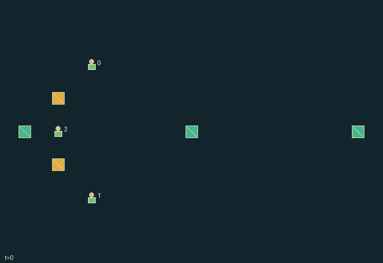

GI127 · Shield Relay: Escort the Supply Line

Escort two living supply carts to the east edge while allocating directional shielding, energy, repairs and movement.
Identity and original contract
3 independently actionable roles; 12 discrete commands per role; 145 native observation columns per role; original horizon 80 steps. Declared per-step reward range: -4 to 4. Observation regime: fully_observable.
Source SHA-256: 01edcd481554df610ae6898ea2319f7235ebc6b4144ffa7298b7b013a7aab205
The objective, rewards, population, map and horizon remain original. A preview is not a success claim.
Objective and gameplay
Escort two living supply carts to the east edge while allocating directional shielding, energy, repairs and movement.
A facing-matched three-cell shield intercepts a projectile before it can damage a teammate or supply cart, consuming one charge. Nearby charge donors change future blocking and repair opportunities. Escort, guard, transfer and repair occupy the same action slot. Carts advance only with nearby escort requests.
- Escort advances every adjacent active supply cart one cell east; several escorts never give extra speed.
- Guard opens three real cells one step ahead, perpendicular to facing. A shot must move opposite that facing and touch the arc during its swept one-cell motion.
- Interceptions cost one charge. Rest within one Manhattan cell of a station restores two charge, capped at six. Transfers conserve actual charge.
- Repair costs two charge per health, up to cart health four. Guarding, escorting, repairing and transferring are separate actions.
- Shots resolve by slot: shield first, then lowest indexed live cart, then lowest indexed live escort. Co-located units are allowed and only the first unshielded target is hit.
- Shots spawn every other step into an empty scheduled slot. Their native position, velocity and lifetime are public.
- Disabled escorts only Wait. Cart arrivals, destruction and all-escort loss retain actual terminal state.
Ending: Every cart is delivered or destroyed, or every escort is disabled; otherwise truncate at 80 nonterminal steps.
What this game explores
Complementary production & service: A useful outcome requires ordered stages, scarce equipment or another role's capability. Measure real completed products and resource circulation rather than counting intermediate actions as success.
Team opposition & interception: Cooperation within a team can coexist with opposition between teams. Preserve team membership, capture and possession rules, and report each team's outcomes instead of assuming a single shared return.
Survival, protection & rescue: Protection and repair alter another role's future feasible actions. Record losses, exposure, rescue and infrastructure as well as delivery; survival is determined by the actual kernel.
These are questions supported by rule structure, not observed learning effects.
Play it: operating walkthrough
crucibles play --game gi127Keep Python running and open its printed address. Select this game, set a seed and press Create session. The game itself is always English.
Assign a role range to Host with Assign / take over, or Assign all roles. Invite a second participant with Create player invitation, then assign a disjoint subset. Every original role is available.
For every owned role choose a legal command and press Queue. Arrow keys / WASD queue a declared directional action for the current role camera when available. Space or Advance one joint step advances everyone together. Non-directional games use the selectors.
Unqueued roles use the labelled untrained uniform-legal policy. Take over or release roles before the next step without resetting. Full-state debug is privileged and permanently logged; role cameras preserve permissions. Close the session to retain logs. Server restart does not restore sessions.
Complete command reference
IDs and English labels exactly match the manifest. Availability depends on role, resources, location and phase. An available action can still have no productive effect.
0·Rest and recharge near station
1·Move north
2·Move east
3·Move south
4·Move west
5·Guard north
6·Guard east
7·Guard south
8·Guard west
9·Transfer charge to nearby least-charged role
10·Repair adjacent supply cart
11·Escort adjacent carts east
Roles and capability identifiers
These original role names describe capabilities, not interchangeable skins. Check each owned role's legal selector before planning handoffs.
agent_0·Upper escort and charge donor
agent_1·Lower escort and charge donor
agent_2·Central driver and mobile repairer
Information and observation permissions
All entity positions and declared attributes are public. Role identity is self information. Fixed maps, constant labels and redundant derived geometry add no hidden information. Only native observations and legal masks enter a learner.
The GIF is full-state debug and may reveal hidden entities or private state. Train on obs[agent], not the picture, state tree or another role's private row. Field slices and visibility are in the original manifest.
Reinforcement-learning integration
import jax
from crucibles_jaxmarl import make
env = make("gi127")
key = jax.random.PRNGKey(0)
key, rk, ak, sk = jax.random.split(key, 4)
obs, state = jax.jit(env.reset)(rk)
actions = env.sample_actions(ak, state)
obs, state, rewards, dones, info = jax.jit(env.step_env)(sk, state, actions)
done = dones["__all__"]Observations are float32 vectors of width 145; actions are scalar int32; masks have 12 entries. Supply all 3 roles each transition. Masked sampling is an engineering reference, not a trained learner.
step_env retains terminal data without reset. step performs outer autoreset and keeps terminal data in info["raw_state"] and info["raw_observation"]. Use dones["__all__"] for episode boundaries; separate completion, failure and time limit in analysis.
JIT or vmap equal identities and shapes. Split independent reset, policy and transition keys. Group different shapes explicitly; do not shrink the population or horizon. Host rendering stays outside training.
Training questions and fair evaluation
Define valid completion from the objective before fitting. Preserve original rewards and also report real deliveries/services, losses, resource state, unresolved episodes and per-role returns. Animation is not a reward signal.
A useful outcome requires ordered stages, scarce equipment or another role's capability. Measure real completed products and resource circulation rather than counting intermediate actions as success.
Cooperation within a team can coexist with opposition between teams. Preserve team membership, capture and possession rules, and report each team's outcomes instead of assuming a single shared return.
Protection and repair alter another role's future feasible actions. Record losses, exposure, rescue and infrastructure as well as delivery; survival is determined by the actual kernel.
Compare memory, communication or centralized critics under matched actor information. Declare critic access; keep actor inputs role-filtered. Match partner/opponent distributions, masks, compute and checkpoint selection. Final tests never enter fitting or selection.
Independent training runs or source-pairing blocks are inferential units; episodes from one policy are not independent training replications. Save hashes, keys, versions, device, time and cost. Negative, zero, failed and indeterminate outcomes are valid. No trained checkpoint or target score is supplied.
Classification and evidence
Overlapping editorial labels are reading aids, not proof of novelty, difficulty, strategic equivalence or learning effects.
- Complementary production & service
- Evidence
manifest.task.objective: Escort two living supply carts to the east edge while allocating directional shielding, energy, repairs and movement.
- Evidence
manifest.actions.10: Repair adjacent supply cart
- Evidence
scene.rules.3: Repair costs two charge per health, up to cart health four. Guarding, escorting, repairing and transferring are separate actions.
- Team opposition & interception
- Evidence
scene.rules.2: Interceptions cost one charge. Rest within one Manhattan cell of a station restores two charge, capped at six. Transfers conserve actual charge.
- Evidence
scene.rules.6: Disabled escorts only Wait. Cart arrivals, destruction and all-escort loss retain actual terminal state.
- Survival, protection & rescue
- Evidence
manifest.task.objective: Escort two living supply carts to the east edge while allocating directional shielding, energy, repairs and movement.
- Evidence
scene.rules.4: Shots resolve by slot: shield first, then lowest indexed live cart, then lowest indexed live escort. Co-located units are allowed and only the first unshielded target is hit.
Source, receipts and preview limits
The world-only English GIF replays saved untrained legal actions through the original kernel. At most 25 actual endpoints include initial and terminal state; no invented interpolation. It is full-state debug, not the role observation.
Original source, observation slices, manifest and mechanism
Native receipt · Presentation receipt
Engineering passes do not establish learning. Nonzero floating differences remain recorded and undetermined; no new tolerance was introduced. Human scores remain unverified.